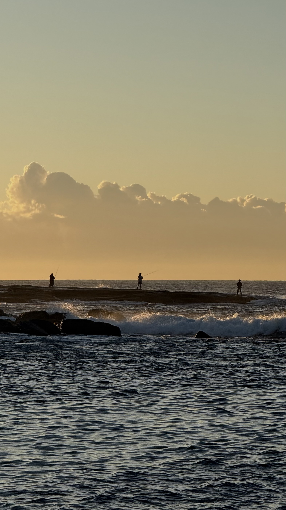
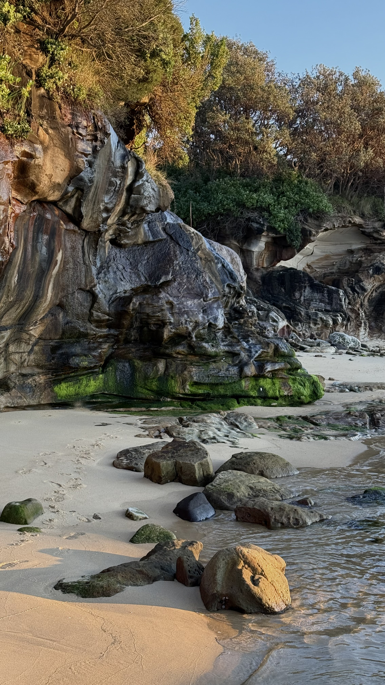
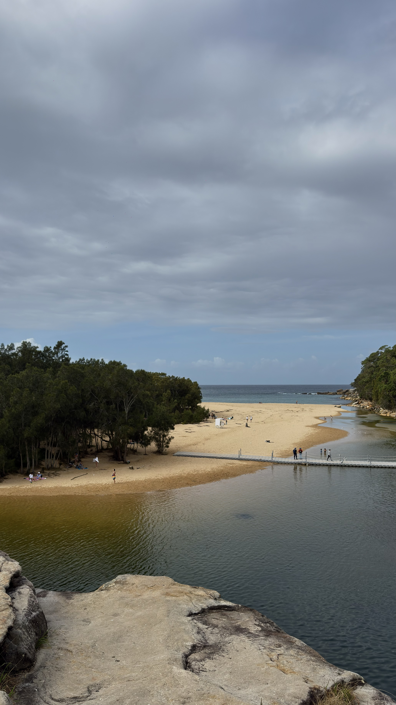

Education and Experience
Diploma of Artificial Intelligence (11287NAT)
Australian Institute of Management
Developing knowledge of artificial intelligence, digital technologies and practical applications of AI in creative and professional environments.
Web & Digital Solutions Assistant
Software Company | 2022–2026
Worked on visual content, digital design concepts and website layouts, supporting creative projects and online communication.
Project Highlights
A selection of creative work across media design, photography and visual identity.

Media Design Projects
Visual communication and creative media design.

Photography
A photographic series showcasing destinations and landscapes across New South Wales.

Brand Concepts
Logo design and personal brand identity through colour, typography and visual consistency.
Portfolio
Media Design Projects
Creative media projects exploring visual communication, digital content and design concepts.

Photography
A photographic series promoting New South Wales through landscapes, attractions and destinations.
Brand Concepts
Logo design and personal branding using a consistent colour palette, typography and visual identity.
Contact Me
Feel free to get in touch with me for enquiries, collaborations or professional opportunities.
Email: minhn22@gmail.com
Instagram: @minh2222sydney
Evidence and Reflection
This section reflects on the design process, responsive decisions and potential improvements made during the development of this portfolio.